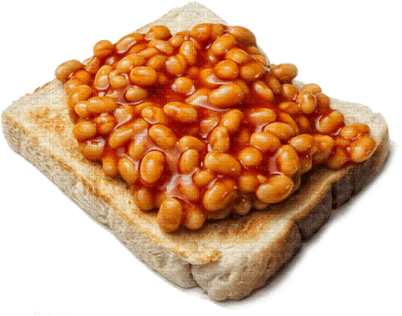

Beans on toast

Description
A Bri'ish staple. Beans on toast!
Serves: 1
Cooking time: 5 minutes
Ingredients
- Can of baked beans
- Butter for spreading
- Bread
Steps
- Toast your bread to your liking
- Empty can of beans into microwave safe bowl and cook until piping hot
- Butter toast when ready
- Pour the lovely hot beans on your toast
- God save the King!!!!
Home